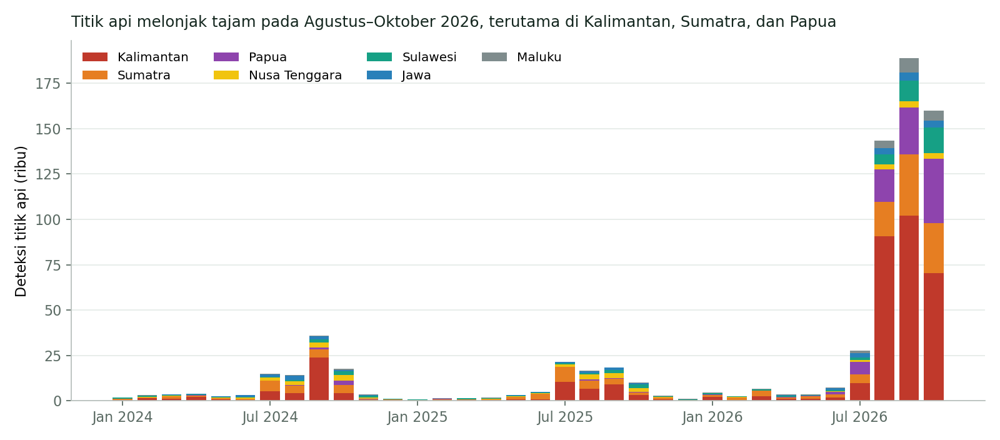
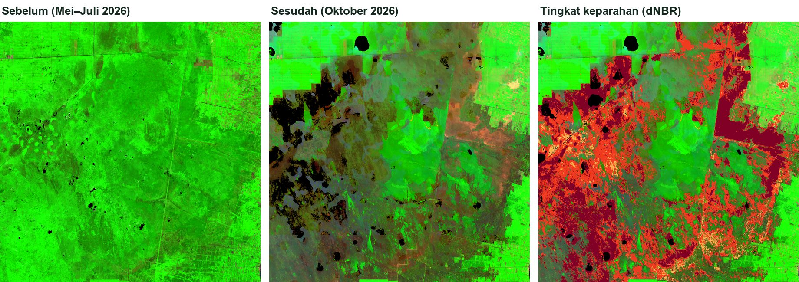
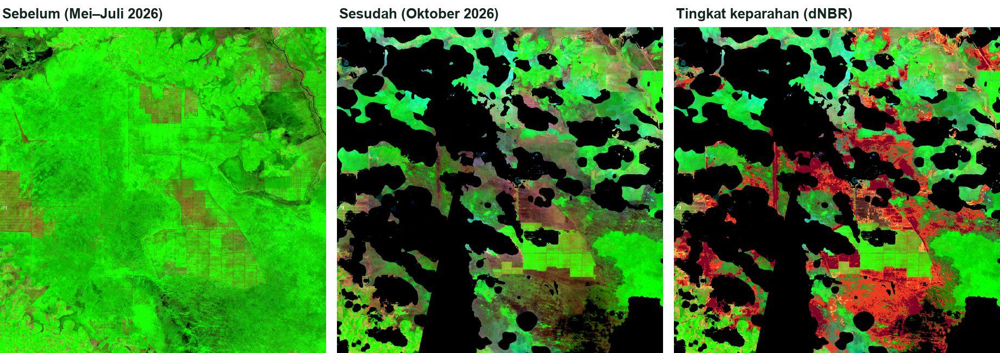
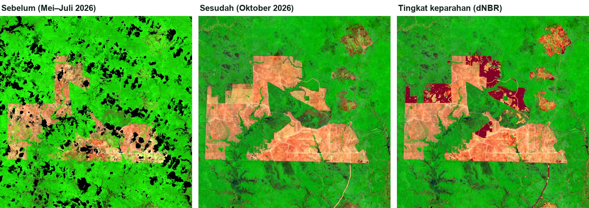

Pemetaan Kebakaran Hutan dan Lahan di Indonesia 2024–2026 dengan Titik Api dan NBR
Latar belakang
Setiap musim kemarau, api kembali muncul di hutan dan lahan gambut Indonesia. Asapnya bisa terbawa ratusan kilometer, mengganggu kesehatan warga, dan melepaskan karbon yang sudah tersimpan puluhan tahun di dalam gambut. Tahun 2015 dan 2019 tercatat sebagai tahun dengan kebakaran terbesar selama 1 dekade terakhir. Pada 2026, satelit kembali mencatat lonjakan titik api, kali ini jauh melampaui dua tahun sebelumnya.
Pertanyaannya, seberapa besar kebakaran tahun ini jika dibandingkan dengan dua tahun sebelumnya? Bulan apa api mulai menyebar, di mana saja ia muncul, dan seberapa parah lahan yang ditinggalkannya?
Data yang digunakan
| Data | Format Data | Jenis Data | Sumber |
|---|---|---|---|
| Titik api FIRMS (MODIS, resolusi 1 km), Januari 2024–Oktober 2026 | Raster harian | Sekunder | NASA FIRMS, melalui Google Earth Engine |
| Citra Sentinel-2 Level-2A (kanal B04, B8A, B12, dan SCL, resolusi 20 m), Mei–November 2026 | Raster | Sekunder | ESA Copernicus, melalui Microsoft Planetary Computer |
| Area terbakar MODIS MCD64A1 (resolusi 500 m), sebagai pembanding | Raster bulanan | Sekunder | NASA, melalui Google Earth Engine |
| Batas provinsi Indonesia | Vektor | Sekunder | geoBoundaries (ADM1) |
Batas provinsi dari geoBoundaries masih memakai pembagian 34 provinsi, jadi Papua Selatan, Papua Tengah, dan Papua Pegunungan masih tergabung dalam Provinsi Papua. Data Sentinel-2 untuk 2026 diambil sampai 2 November 2026.
Metode
Pekerjaan ini dibagi menjadi dua bagian. Bagian pertama melihat gambaran besarnya, yaitu kapan dan di mana api muncul di seluruh Indonesia setiap bulan. Untuk itu dipakai data titik api dari sensor MODIS di satelit Terra dan Aqua. Kedua satelit ini melintas di atas Indonesia sekitar empat kali sehari dan mendeteksi panas dari api, yang tetap terbaca meskipun langit dipenuhi asap. Citra biasa seperti Sentinel-2 hanya merekam tempat yang sama sekitar lima hari sekali dan mudah tertutup asap, sehingga kurang cocok untuk memantau seluruh Indonesia setiap bulan. Satelit membagi permukaan bumi menjadi kotak-kotak kecil berukuran sekitar 1 × 1 km. Kalau dalam satu hari satelit menangkap panas api di sebuah kotak, kotak itu dihitung sebagai satu deteksi. Api yang menyala lima hari di tempat yang sama akan tercatat lima deteksi, sedangkan kebakaran yang meluas ke sepuluh kotak dalam sehari tercatat sepuluh deteksi. Jadi jumlah deteksi menggambarkan seberapa luas dan seberapa lama api menyala, bukan berapa kali kebakaran terjadi. Deteksi ini lalu dijumlahkan ke dalam kotak-kotak berukuran sekitar 5,5 km × 5,5 km di seluruh daratan Indonesia.
Bagian kedua melihat lebih dekat. Di Kalimantan Tengah, Sumatera Selatan, dan Papua, dipilih satu kawasan seluas sekitar 28 km × 28 km yang paling padat titik apinya selama Agustus–Oktober 2026. Di kawasan itu, citra Sentinel-2 sebelum dan sesudah musim kebakaran dibandingkan memakai Normalized Burn Ratio (NBR). Vegetasi yang sehat punya NBR tinggi, sedangkan lahan yang tinggal abu dan arang punya NBR sangat rendah. Selisih keduanya, yang disebut dNBR, menunjukkan seberapa parah lahan itu terbakar.
| Tahap | Keterangan |
|---|---|
| Titik api bulanan | Deteksi FIRMS dengan tingkat keyakinan ≥ 50%, dijumlah per sel 0,05° (sekitar 5,5 km) dan per bulan di daratan Indonesia |
| Pemilihan studi kasus | Jendela 0,25° × 0,25° dengan titik api terbanyak selama Agustus–Oktober 2026 di setiap provinsi terpilih |
| Pemilihan citra | Sentinel-2 L2A dengan tutupan awan < 40%; piksel awan, bayangan, kabut, dan asap dibuang dengan kelas SCL |
| NBR | (B8A − B12) / (B8A + B12), dihitung per citra |
| Komposit sebelum | Median NBR 1 Mei–15 Juli 2026 |
| Komposit sesudah | Persentil 75 NBR 1 Oktober–2 November 2026, agar pengamatan yang lebih jernih dari asap lebih diutamakan |
| Lahan terbakar | dNBR ≥ 0,27, NBR sebelum ≥ 0,2 (bervegetasi), dan NBR sesudah < 0,1 (tinggal abu atau tanah terbuka) |
| Tingkat keparahan | Sedang-rendah (0,27–0,44), sedang-tinggi (0,44–0,66), dan tinggi (≥ 0,66) menurut Key & Benson (2006) |
Ambang dNBR dari Key & Benson awalnya dibuat untuk hutan di Amerika Serikat dengan mencocokkan citra satelit dan pengukuran kerusakan di lapangan. Belum ada ambang baku untuk hutan tropis dan gambut di Indonesia, sehingga angka ini dipakai sebagai acuan, lalu hasilnya dicek secara visual dengan citra sebelum dan sesudah.
Hasil
Dua tahun pertama tidak terjadi lonjakan yang terlalu besar. Pada 2024 tercatat 106.273 deteksi titik api, dan pada 2025 turun menjadi 84.707. Sementara tahun 2026 menunjukkan perubahan yang sangat signifikan. Sampai Oktober saja, jumlahnya sudah mencapai 547.976 deteksi, lebih dari lima kali lipat tahun 2024. Hampir 90% di antaranya muncul hanya dalam tiga bulan, yaitu Agustus, September, dan Oktober.

Polanya hampir sama setiap tahun. Api mulai bermunculan pada Juli, memuncak antara Juli dan September, lalu mereda saat hujan datang pada November. Bedanya, pada 2026 puncak itu jauh lebih tinggi dan bertahan lebih lama. September 2026 mencatat 188.903 deteksi, sedangkan September 2024 hanya 36.073. Data area terbakar MODIS, yang dihitung dengan cara berbeda dan tidak bergantung pada titik api, juga menunjukkan hal yang sama. Agustus 2026 menjadi bulan dengan area terbakar terluas sejak 2020, yaitu sekitar 476 ribu hektare.
Peta di bawah memperlihatkan bagaimana api bergerak dari bulan ke bulan. Tekan tombol putar untuk melihat perubahannya, atau geser penanda waktu ke bulan tertentu.
Klik sebuah kotak untuk melihat jumlah titik api dan provinsinya. Setelah peta diklik, gulir untuk memperbesar atau memperkecil.
Kalimantan menjadi pusat kebakaran 2026, dengan lebih dari separuh titik api nasional. Kalimantan Tengah sendiri mencatat 126.754 deteksi, hampir 19 kali lipat dari tahun 2024. Papua juga melonjak tajam, dari 4.308 deteksi pada 2024 menjadi 75.327 pada 2026.
| Provinsi | 2024 | 2025 | 2026 (sampai Oktober) |
|---|---|---|---|
| Kalimantan Tengah | 6.751 | 4.291 | 126.754 |
| Kalimantan Barat | 23.913 | 21.396 | 82.894 |
| Papua | 4.308 | 1.592 | 75.327 |
| Sumatera Selatan | 6.539 | 4.616 | 52.070 |
| Kalimantan Timur | 10.936 | 5.383 | 42.639 |
| Kalimantan Selatan | 2.090 | 1.390 | 27.091 |
| Maluku | 1.126 | 583 | 12.698 |
| Papua Barat | 260 | 246 | 12.249 |
| Indonesia | 106.273 | 84.707 | 547.976 |
Angka berupa jumlah deteksi titik api, bukan jumlah kejadian kebakaran. Satu kebakaran yang menyala beberapa hari akan terhitung beberapa kali.
Melihat lebih dekat dengan NBR
Titik api hanya menunjukkan di mana ada panas, tetapi tidak menunjukkan seberapa luas dan seberapa parah lahan yang terbakar. Karena itu, tiga kawasan dengan titik api terpadat diperiksa lebih dekat dengan citra Sentinel-2.

Di Kalimantan Tengah, hamparan hijau yang sebelumnya menutupi lahan gambut berubah menjadi coklat gelap hingga hitam pada Oktober. Sekitar 28.664 hektare atau 37,6% dari kawasan ini terbakar, dan hampir semuanya masuk kategori sedang-tinggi sampai tinggi. Artinya, api tidak sekadar melalap permukaan, tetapi menghanguskan hampir seluruh vegetasi di atasnya.

Sumatera Selatan adalah kawasan dengan titik api terbanyak di antara ketiganya, tetapi juga yang paling sulit diamati. Hampir separuh kawasan tertutup awan atau asap tebal di semua citra Oktober, sehingga tampak hitam pada gambar. Dari bagian yang bisa dinilai, sekitar 12.421 hektare atau 30,3% terbakar. Angka sebenarnya kemungkinan lebih besar, karena bagian yang tertutup asap justru berada di tengah-tengah area kebakaran.

Di Papua, citra sebelum dan sesudah memperlihatkan hamparan lahan terbuka yang sangat luas dengan batas-batas lurus, pola yang khas dari pembukaan lahan skala besar. Area yang terdeteksi terbakar seluas 5.798 hektare sebagian besar berupa blok-blok baru yang dibuka antara Juli dan Oktober 2026, ditambah jalur baru yang menyerupai jalan di bagian selatan. Jadi titik api di kawasan ini kemungkinan besar berasal dari pembakaran sisa vegetasi saat lahan dibuka, bukan dari kebakaran hutan yang menjalar seperti di gambut Kalimantan.
| Kawasan | Titik api Agt–Okt 2026 | Luas yang bisa dinilai (ha) | Sedang-rendah (ha) | Sedang-tinggi (ha) | Tinggi (ha) | Total terbakar (ha) | Persentase (%) |
|---|---|---|---|---|---|---|---|
| Kalimantan Tengah | 4.323 | 76.177 | 1.534 | 15.215 | 11.915 | 28.664 | 37,6 |
| Sumatera Selatan | 5.335 | 40.945 | 1.175 | 6.283 | 4.964 | 12.421 | 30,3 |
| Papua | 4.677 | 64.554 | 1.073 | 1.633 | 3.092 | 5.798 | 9,0 |
Ketiga kawasan yang dikaji dengan NBR sebenarnya memiliki ukuran yang sama, sekitar 77.000 hektare. Namun, tidak semua bagiannya bisa diamati, karena sebagian tertutup awan atau asap tebal di citra satelit. Bagian yang tertutup ini tidak bisa dipastikan terbakar atau tidak, sehingga tidak ikut dihitung. Di Kalimantan Tengah hampir seluruh kawasan bisa diamati, sedangkan di Sumatera Selatan hanya sekitar separuhnya. Persentase pada tabel dihitung dari bagian yang bisa diamati saja, bukan dari seluruh kawasan.
Selain lahan yang jelas terbakar, ada juga lahan yang nilai NBR-nya hanya turun sedikit antara sebelum dan sesudah kemarau. Perubahan sekecil ini bisa disebabkan oleh api yang hanya membakar semak di permukaan, kabut tipis yang masih tersisa di citra, atau rumput yang menguning karena kering. Karena penyebabnya tidak bisa dipastikan, lahan seperti ini tidak dimasukkan ke dalam luas terbakar. Luasnya cukup besar, sekitar 39.330 hektare di Kalimantan Tengah, 19.984 hektare di Sumatera Selatan, dan 38.943 hektare di Papua. Artinya, luas lahan yang benar-benar terbakar bisa saja lebih besar dari angka pada tabel.
Kesimpulan
Kebakaran hutan dan lahan pada 2026 adalah yang terbesar dalam tiga tahun terakhir. Jumlah titik api lebih dari lima kali lipat tahun 2024, dan hampir semuanya muncul dalam tiga bulan di puncak kemarau. Kalimantan menjadi pusatnya, tetapi lonjakan juga terjadi di Sumatera Selatan dan Papua.
Pengamatan lebih dekat dengan NBR memperlihatkan bahwa kebakaran di tiap wilayah tidak selalu sama. Di Kalimantan Tengah dan Sumatera Selatan, api menghanguskan lahan gambut yang luas dengan tingkat keparahan tinggi. Di Papua bagian selatan, sebagian besar lahan yang terbakar berada di area yang sedang dibuka secara besar-besaran.
Titik api MODIS yang dipakai di sini beresolusi 1 km dan menghitung deteksi, bukan luas kebakaran. Asap tebal pada Oktober 2026 menutupi sebagian kawasan studi, terutama di Sumatera Selatan, sehingga luas terbakar di sana kemungkinan masih lebih kecil dari kenyataan. Ambang dNBR juga belum disesuaikan khusus untuk gambut tropis, dan analisis NBR baru dilakukan di tiga kawasan. Luas lahan yang terbakar sepanjang 2026, terutama di Sumatera Selatan, baru bisa dihitung lebih utuh setelah musim hujan, ketika asap sudah hilang dan citra Sentinel-2 kembali bersih.
← View other projects